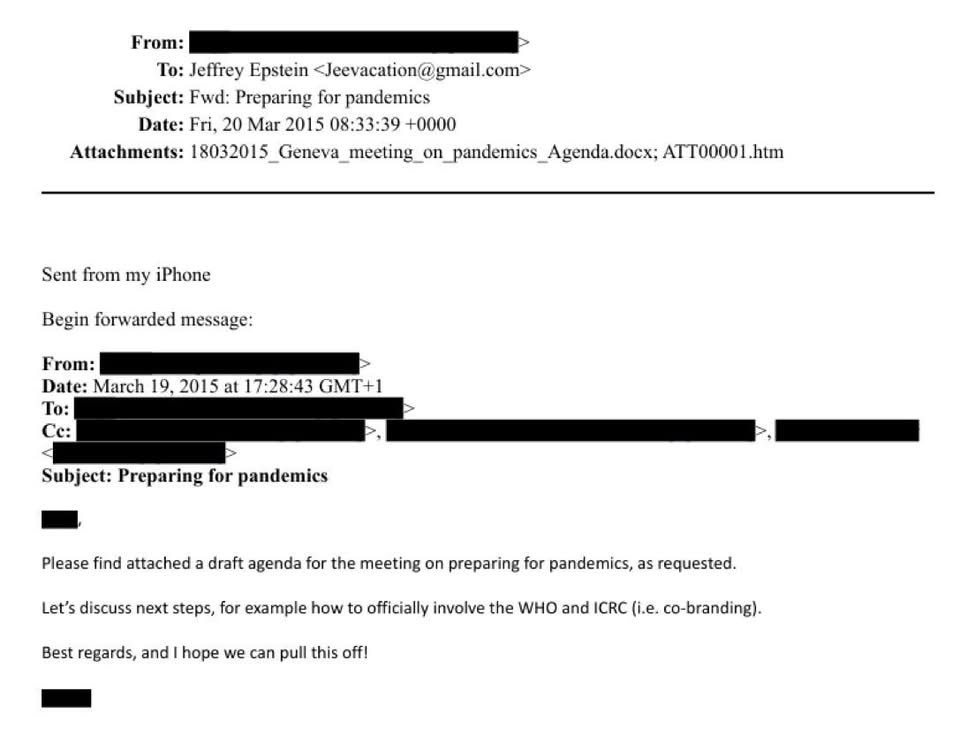

Epstein Told a Think Tank How to Pitch Bill Gates: ‘Bill Will Not Go’
The 2015 email quoted across X named the International Committee of the Red Cross, not the CDC, and was about co-branding a public conference; the same files show Jeffrey Epstein vetting the conference’s invitation to Bill Gates.

The “Preparing for pandemics” email now circulating as evidence against Jeffrey Epstein was written on March 19, 2015, by Walter Kemp, an official of the International Peace Institute, a New York think tank that works with the United Nations, to the institute’s president, Terje Rød-Larsen, who forwarded it to Epstein the next day. It proposed involving “the WHO and ICRC (i.e. co-branding)” in a Geneva meeting, Justice Department records show, not the CDC. The more revealing document sits nearby: in June 2015, Rød-Larsen’s office sent Epstein its draft invitation asking Bill Gates to give the meeting’s keynote, and Epstein sent back his verdict.
A Feb. 15, 2026, post on X by the account Wall Street Apes said a 2015 email to Epstein “revealed” that its sender wrote: “Let’s discuss next steps… how to officially involve the WHO and CDC,” and “I hope we can pull this off.” The post linked to no document.
The email exists in the Justice Department’s Epstein Library, in two copies. The full sentence reads: “Let’s discuss next steps, for example how to officially involve the WHO and ICRC (i.e. co-branding).” The ICRC is the International Committee of the Red Cross. The Centers for Disease Control and Prevention appear nowhere in the message. The post’s ellipsis removed “for example,” and its quotation stopped before “(i.e. co-branding),” the words that show what “involve” meant: putting the organizations’ names on an event.
Kemp wrote from an IPI address to Rød-Larsen, copying three colleagues, and attached “a draft agenda for the meeting on preparing for pandemics, as requested.” He signed off: “Best regards, and I hope we can pull this off!” Rød-Larsen forwarded the message from his iPhone to Epstein’s Gmail account, a second copy in the files shows. Hours later on March 20, Epstein forwarded it again, to a recipient whose name the Justice Department redacted.
The attached agenda describes a policy conference. Titled “Preparing for Pandemics: Lessons Learned for More Effective Responses,” it planned sessions on the Spanish flu and H1N1, on “Lessons learned from responding to Ebola and Polio” and on recommendations for faster responses, with speakers to include WHO Director-General Margaret Chan, ICRC President Peter Maurer, World Bank President Jim Yong Kim and a representative of the Bill and Melinda Gates Foundation, the draft agenda shows. IPI’s concept note grounded the event in public warnings, citing remarks Gates made at a vaccine alliance meeting in Berlin that January, and others by Kim, to argue that “the world is dangerously unprepared for future pandemics,” the note says.
The pitch to Gates is where Epstein appears. On June 2, 2015, Rød-Larsen wrote to “Bill,” in an email whose attachment was titled as an invitation to Mr. Bill Gates, saying he “would be very honored” if Gates would “deliver the keynote address.” The same day, he forwarded the invitation to Epstein, the files show.
Nine days later, an IPI aide sent Epstein “Terje’s draft email to BG” and asked him to “give Terje your feedback before it is sent.” The draft said Kim would be sending a senior person. Epstein answered bluntly: “no needs a lot of work, if kim is only sending a rep , bill will not go.” He added that the email “needs to start with the title and who else is going,” the exchange shows.
The revision that came back the same day followed him point by point. It opened with the conference title, named the confirmed speakers, Chan, Maurer and the head of the UN Office in Geneva, Michael Møller, and dropped the line about Kim’s envoy. It also assured Gates, “The event is fully financed and will not require further financial assistance,” and added, “I hope your foundation is happy with the cooperation with IPI so far.” The aide’s cover note to Epstein began: “Thanks, Jeff – that makes sense!” The files reviewed do not show whether the final version was sent or whether Gates replied.
IPI held the meeting on Sept. 12, 2015, at the Palais des Nations in Geneva, “to facilitate a discussion on lessons learned from past experiences with dealing with pandemics,” according to IPI’s own account. That account names Rød-Larsen, Chan and Elhadj As Sy of the International Federation of the Red Cross as speakers. It does not mention Gates. A Portuguese fact check by Observador reached the same conclusion about the event and rated claims that the files show a pandemic simulation false.
Epstein’s ties to the institute did not end with advice. In October 2020, Rød-Larsen resigned after apologizing “for his failed judgment in securing donations from foundations related to Jeffrey Epstein and in securing his own personal loan from Epstein in 2013,” IPI’s board said. In February 2026, Norway’s economic crime unit, Økokrim, said Rød-Larsen is suspected of aiding and abetting gross corruption, and Norway’s foreign minister said he had shown poor judgment regarding the convicted sex offender, The Associated Press reported. Rød-Larsen denies the allegations; his lawyer, John Christian Elden, said he “has previously expressed regret for his association with Epstein,” Bloomberg reported.
Gates has not addressed the IPI emails specifically. Asked about the latest files, his spokesperson told ABC News, “These claims are absolutely absurd and completely false,” and Gates said in a television interview that he was “foolish to spend time with him,” ABC News reported. No public comment from Kemp or from IPI on the 2015 emails was found.
The point
What we found: the viral email is real, but it was misquoted where it matters. It names the Red Cross’s ICRC, not the CDC, and the “involvement” it sought was co-branding a public conference on lessons from Ebola and polio. Nothing in it describes a plan to cause or simulate a pandemic. The eureka lies elsewhere in the same files: the president of a UN-facing think tank sent his keynote invitation to Bill Gates to Epstein for approval, and the rewrite followed Epstein’s instructions line by line. The record casts Epstein, years after his conviction, as a gatekeeper to Gates.
Why it matters
Misquoted documents spread faster than the files they come from, and a one-word swap can turn a conference-planning note into a supposed plot. The real record raises a sharper question: how a convicted sex offender came to be consulted on how a UN-facing institute should approach one of the world’s most powerful philanthropists. Every document cited here is public, and readers can check each one against the post.
The questions
- Why did IPI’s president send his keynote invitation to Bill Gates to Epstein for approval before it went out?
- Was the revised invitation ever sent, and did Gates or his foundation respond to it?
- Who received the “Preparing for pandemics” email when Epstein forwarded it on March 20, 2015, and why?
- Did Epstein’s role as an adviser on the Gates pitch have any connection to the Epstein-foundation donations IPI later acknowledged?
Sources
- EFTA00861674: Epstein forwards “Preparing for pandemics” (Walter Kemp to Terje Rød-Larsen, March 19, 2015) U.S. Department of Justice, Epstein Library (Data Set 9)
- EFTA00654215: Rød-Larsen forwards “Preparing for pandemics” to Epstein, March 20, 2015 U.S. Department of Justice, Epstein Library (Data Set 9)
- EFTA01194684: IPI draft agenda, “Preparing for Pandemics: Lessons Learned for More Effective Responses” U.S. Department of Justice, Epstein Library (Data Set 9)
- EFTA02679133: IPI concept note, “Preparing for Pandemics: Lessons Learned for More Effective Responses” U.S. Department of Justice, Epstein Library (Data Set 11)
- EFTA01194682: “RE: draft email” — IPI sends Epstein the draft invitation to Gates, June 11, 2015 U.S. Department of Justice, Epstein Library (Data Set 9)
- EFTA00855459: Rød-Larsen forwards his conference invitation to “Bill” to Epstein, June 2, 2015 U.S. Department of Justice, Epstein Library (Data Set 9)
- Preparing for Pandemics International Peace Institute
- Statement by the Board of the International Peace Institute: Resignation of President Terje Rød-Larsen International Peace Institute
- Fact Check. Ficheiros do caso Epstein mostram discussão para a simulação de uma pandemia com Bill Gates antes da Covid-19? Observador (José Carlos Duarte)
- Epstein’s top diplomatic fixer Bloomberg (Kati Pohjanpalo and Ott Ummelas), republished by Jewish World Review
- Norwegian ambassador resigns amid scrutiny over her contacts with Epstein The Associated Press, via PBS NewsHour
- ‘I was foolish’: Bill Gates denies wrongdoing after latest release of Epstein files ABC News (Bill Hutchinson), via ABC30